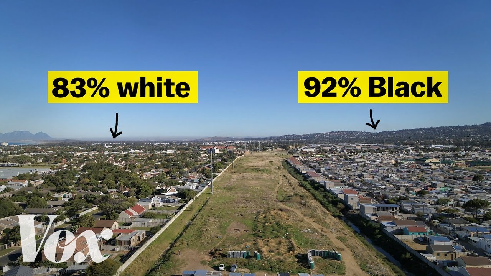

【为什么南非仍然如此分裂】
Summary: This strip in Cape Town divides Strand from Nomzamo, showing stark racial and economic divides despite their proximity.
摘要： 南非开普敦的这片区域将Strand与Nomzamo分隔开来，尽管距离很近，却显示出明显的种族和经济差异。

⏱️ Estimated Reading Time: 13 min
This strip, in Cape Town, South Africa, divides the beachside community of Strand from the township of Nomzamo.
这条位于南非开普敦的地带将海滨社区Strand与小镇Nomzamo分隔开来。
They're only a few meters apart.
它们之间仅相隔几米。
But the people on each side live very different lives.
但两边的人们过着截然不同的生活。
Strand has backyards and driveways.
Strand有后院和车道。
Nomzamo is much more dense.
Nomzamo则密集得多。
And the people here have fewer basic services: Less piped water. Less internet access.
这里的人们获得的基本服务更少：自来水供应不足，网络接入有限。
And Nomzamo is majority Black, while the area across the line is majority white.
Nomzamo以黑人为主，而界线另一侧则以白人为主。
If we use dots on a map to represent race, you can see how stark that divide is.
如果我们用地图上的点来表示种族，你可以看到这种分化有多么明显。
If we zoom out to the whole city, we can see it's actually everywhere.
如果放大到整个城市，我们会发现这种现象无处不在。
And this is the case across much of South Africa.
南非大部分地区都是如此。
The color of your skin here often determines where you live.
在这里，你的肤色往往决定了你住在哪里。
It also determines your quality of life.
它还决定了你的生活质量。
This map shows where jobs and opportunities are primarily concentrated in Cape Town.
这张地图显示了开普敦的工作和机会主要集中在哪些地方。
And this is where most of the city's Black people live, in informal settlements called "townships" on the city's periphery.
而这里是城市大多数黑人居住的地方，位于城市边缘的非正式定居点，被称为“小镇”。
"People have to move by public transport for up to three hours a day, and they can't take care of their obligations in the community, with the rest of their family, because they're always working and they're always traveling."
“人们每天不得不乘坐公共交通长达三个小时，他们无法履行在社区和家庭中的义务，因为他们总是在工作和奔波。”
For decades, South Africa was under apartheid: a system that wrote segregation into law.
几十年来，南非处于种族隔离制度之下：这是一种将种族隔离写入法律体系的制度。
A white minority controlled where non-white people could live, work, exist.
少数白人控制着非白人可以居住、工作和生存的地方。
Many were forced out of their homes.
许多人被迫离开家园。
In 1994, a democratically elected government took power, and ended apartheid.
1994年，民选政府上台，结束了种族隔离。
It was supposed to be a new beginning.
这本来应该是一个新的开始。
But a lot of the country still looks like this.
但这个国家的许多地方仍然如此。
And that's because South Africa's legacy of racial division goes back centuries.
这是因为南非的种族分裂遗产可以追溯到几个世纪前。
In the 1600s, the Dutch took over the southern tip of Africa, to supply ships with food along the trade route to Asia.
17世纪，荷兰人占领了非洲南端，为通往亚洲的贸易航线上的船只提供食物。
150 years later, Britain seized it, and named it "Cape Colony."
150年后，英国夺取了这里，并将其命名为“开普殖民地”。
Many Dutch colonists moved here, further inland, to escape British rule and continue exploiting enslaved people.
许多荷兰殖民者迁移到更远的内陆，以逃避英国统治并继续剥削奴隶。
Just like the Dutch, the British used Cape Colony as a strategic location for trade; it wasn't economically significant.
和荷兰人一样，英国人将开普殖民地作为贸易的战略要地；它并不具有经济意义。
But in the 1870s, that changed, when the British started mining diamonds there.
但在19世纪70年代，英国人开始在那里开采钻石，情况发生了变化。
Suddenly, Cape Colony was one of Britain's most prized and exploited colonies.
突然间，开普殖民地成为英国最珍贵和剥削最严重的殖民地之一。
In order to get the diamonds out of the country, they built railways, to connect the mines up here to the coast.
为了将钻石运出该国，他们修建了铁路，将这里的矿山与海岸连接起来。
The railways allowed the British to access a global diamond market through the port city of Cape Town.
铁路使英国人能够通过开普敦港进入全球钻石市场。
Soon, the economy of Cape Colony was centered around the railroads.
很快，开普殖民地的经济就以铁路为中心。
Especially this main route.
尤其是这条主要路线。
The green areas on this map show the Black regions of Cape Colony, largely left out of the railroad economy.
这张地图上的绿色区域显示了开普殖民地的黑人地区，这些地区基本上被排除在铁路经济之外。
Racial inequality in Cape Colony was being reinforced by location.
开普殖民地的种族不平等因地理位置而加剧。
To keep it that way, the colonial government started writing segregation into law.
为了保持这种状态，殖民政府开始将种族隔离写入法律。
The Natives Land Act of 1913 pushed Black people into these areas: only eight percent of South Africa's land; and restricted them from owning land everywhere else; or, relocated them to the edges of the major cities, to work for white people.
1913年的《原住民土地法》将黑人推入这些地区：仅占南非土地的8%；并限制他们在其他地方拥有土地；或者将他们迁移到大城市的边缘，为白人工作。
These laws began to shape the region.
这些法律开始塑造该地区。
Cape Town's growth from the increased trade turned the port town into a major city.
贸易的增长使开普敦从一个港口小镇变成了一个大城市。
Many migrants from the rest of the colony, and elsewhere, moved here, to what was then the outskirts of Cape Town, where former enslaved people, merchants, artists, and immigrants, were forming a neighborhood called District Six.
来自殖民地其他地区和别处的许多移民搬到了这里，当时这里是开普敦的郊区，前奴隶、商人、艺术家和移民在那里形成了一个名为“第六区”的社区。
As the city grew around District Six, so did the neighborhood.
随着城市在第六区周围发展，这个社区也在发展。
For decades, District Six was a thriving, integrated community.
几十年来，第六区是一个繁荣的、融合的社区。
"We were a very cosmopolitan, you could say family, almost. Because there were people from all different nationalities, from all different walks of life."
“我们是一个非常国际化的，几乎可以说是一个大家庭。因为这里有来自不同国家、不同生活背景的人。”
"This was the statement: Your child is my child."
“这就是我们的宣言：你的孩子就是我的孩子。”
But it wouldn't last.
但这并没有持续下去。
In 1934, Britain's legal hold in what was now the Union of South Africa officially ended.
1934年，英国对当时南非联邦的法律控制正式结束。
The remaining white minority, the descendants of Dutch colonists, took control.
剩下的少数白人，荷兰殖民者的后裔，接管了权力。
And they built on the foundation the British were leaving behind.
他们在英国人留下的基础上继续发展。
Between 1949 and 1971, the all-white government passed 148 laws solidifying apartheid.
1949年至1971年间，全白人政府通过了148项法律，巩固了种族隔离制度。
"Apartheid allowed for the full realization of the ambition of the fascist project in South Africa."
“种族隔离制度使南非法西斯项目的野心得以完全实现。”
In 1950, the Population Registration Act officially classified people by race: white, colored, and native (or Black). And eventually, Asian.
1950年，《人口登记法》正式将人们按种族分类：白人、有色人种和原住民（或黑人）。最终还包括亚洲人。
Then they made laws saying where people could live.
然后他们制定了法律，规定人们可以住在哪里。
Around the country, Black South Africans were moved into these areas, called homelands, or "bantustans."
在全国范围内，南非黑人被迁移到这些被称为“家园”或“班图斯坦”的地区。
Bantustans were rural areas and had underdeveloped economies.
班图斯坦是农村地区，经济不发达。
Many of them were in the areas Britain had already excluded from the railway economy, and where Black land ownership had been restricted to.
其中许多地区是英国已经排除在铁路经济之外的地区，也是黑人土地所有权被限制的地区。
Black people were forced to carry "pass books," that specified where they were allowed to work or travel to.
黑人被迫携带“通行证”，上面规定了他们可以工作或旅行的地方。
In cities like Cape Town, the "Group Areas Act" moved the remaining non-whites into separate urban areas.
在开普敦等城市，《集团地区法》将剩余的非白人迁移到单独的城市地区。
"The most prime land, and the land closest to higher-valued property, was allocated to white people."
“最优质的土地和最靠近高价值财产的土地被分配给了白人。”
In 1966, the government declared that District Six was now a whites-only area.
1966年，政府宣布第六区现在是白人专用区。
The residents of District Six received removal letters like this one, that said living there was illegal, because they were not white.
第六区的居民收到了这样的驱逐信，信中说他们住在那里是非法的，因为他们不是白人。
Bulldozers drove into District Six, and razed it to the ground.
推土机开进第六区，将其夷为平地。
"We lived here. We had a life here."
“我们住在这里。我们在这里有过生活。”
"It was very traumatic for a lot of people."
“对许多人来说，这是一段非常痛苦的经历。”
"It's like ripping out someone's heart."
“就像撕碎一个人的心。”
More than 60,000 people were forcibly removed from their homes.
超过6万人被强行驱逐出家园。
This kind of violence against non-white people was commonplace around the country.
这种针对非白人的暴力行为在全国都很普遍。
But, after decades of pressure, both from within South Africa and abroad, apartheid rule finally came to an end.
但是，经过来自南非国内外的数十年压力，种族隔离统治终于结束了。
The new government lifted restrictions on where people could live.
新政府取消了人们居住地的限制。
Millions of people, who had been excluded from economic development for centuries, migrated to major cities, looking for basic services and economic opportunity.
数百万被排除在经济发展之外几个世纪的人们迁移到大城市，寻找基本服务和经济机会。
"For any family with no prospect of employment, the most rational, logical choice to make is to migrate to an urban center."
“对于任何没有就业前景的家庭来说，最合理、最合乎逻辑的选择就是迁移到城市中心。”
They settled where there was empty land, creating townships on the peripheries of major cities like Cape Town.
他们在有空地的地方定居，在开普敦等大城市的边缘建立了小镇。
The government built millions of homes, and expanded clean water and electricity.
政府建造了数百万套住房，并扩大了清洁水和电力的供应。
"But it had a number of unforeseen consequences, the most important of which is that the only land that could be used for the public housing program was on the periphery of the city. And for that reason, a brilliant intention to overcome the apartheid legacy unintentionally reproduced the very same legacy it was trying to undo."
“但这带来了一些意想不到的后果，其中最重要的是，唯一可用于公共住房计划的土地位于城市边缘。因此，一个旨在克服种族隔离遗产的明智意图无意中复制了它试图消除的遗产。”
Today, 60% of the mostly Black population of Cape Town lives in these townships at the edge of the city.
今天，开普敦以黑人为主的60%人口生活在城市边缘的这些小镇中。
The thing is, Cape Town's City Center has land to develop.
问题是，开普敦市中心有可供开发的土地。
But because of its location, it's valuable, so it usually gets sold to private developers, who build luxury apartments.
但由于其地理位置，它很有价值，所以通常被卖给私人开发商，他们建造豪华公寓。
Nearly a billion dollars worth of them are going up by the coast.
价值近十亿美元的豪华公寓正在海岸边拔地而起。
But, right in the heart of Cape Town, by all the expensive developments, District Six remains largely untouched.
但是，就在开普敦市中心，在所有昂贵的开发项目旁边，第六区基本上未被触动。
The former residents have fought against private development, and they've actually succeeded.
前居民们反对私人开发，他们实际上取得了成功。
Some have even managed to return to houses built by the city.
有些人甚至设法回到了市政府建造的房子里。
"I wanted to come back here, where I was born, which was part of our family's heritage."
“我想回到这里，我出生的地方，这是我们家族遗产的一部分。”
"I couldn't believe that I was back. It was a sense of relief."
“我不敢相信我回来了。这是一种解脱的感觉。”
But there are still hundreds of claimants waiting to get back to District Six.
但仍有数百名申请者等待回到第六区。
"We haven't done the difficult and the painful work to confront what the intergenerational consequences are of colonialism. Of apartheid."
“我们还没有做艰难而痛苦的工作来面对殖民主义和种族隔离的代际后果。”
The story of Cape Town and South Africa's racial segregation starts far in the past.
开普敦和南非种族隔离的故事始于遥远的过去。
But it's very much entangled with the present.
但它与现在紧密交织在一起。
Apartheid and colonialism here are over.
这里的种族隔离和殖民主义已经结束。
But many of the barriers they built have yet to be dismantled.
但他们建立的许多障碍尚未被拆除。
"The kind of psychic scars that's left on individuals and on communities. We haven't begun the work of saying, How do we live together, in the face of that history?"
“那种留在个人和社区心理上的伤痕。我们还没有开始思考，面对那段历史，我们如何共同生活？”